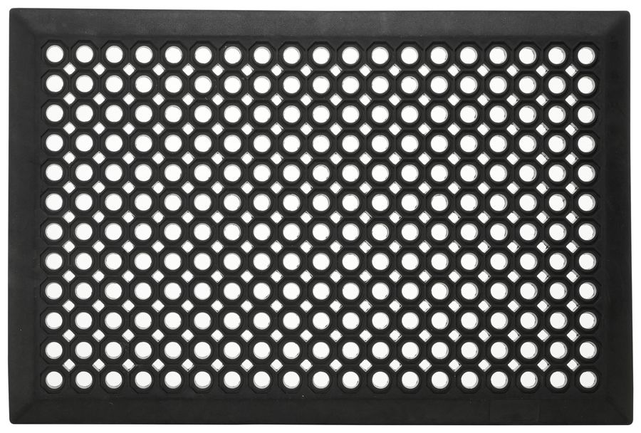

Mata gumowa z otworami
Czarna mata gumowa z okrągłymi otworami w ośmiokątnych polach i fazowaną krawędzią. Do wejść, kuchni i warsztatów.
| 40×60 cm | 79,00 zł netto |
| 60×90 cm | 149,00 zł netto |
| 90×150 cm | 349,00 zł netto |
| Progi najazdowe | W zestawie, gumowe, na 2 dłuższych bokach |